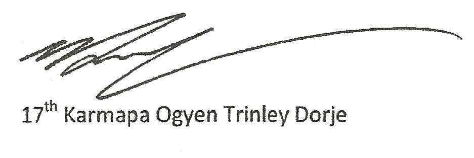

In many countries in Europe there are numerous students connected with the Karma Kagyu school of Tibetan Buddhism and also many people who have a direct connection with the Karmapa. Many of them have been wishing and expecting me to come to Europe for twenty or thirty years. This has become a very important purpose in my life. Since my childhood I have kept it very strongly in my heart. This year there is a strong hope that I may be able to visit Europe and this is good news for me and those who have invited me. I hope and wish that this year all our expectations and aspirations to meet together in Europe will be fulfilled.
All the centres and students have been making preparations for a long time with prayers and aspirations that I will be coming there. I am very grateful to all of you. I am hoping and aspiring to visit Europe, not only this year but also many times in the future. It's very difficult to remember past lives. Although there could be countless past lives it is not necessary that we remember them because there are many complicated hurdles between lives and also much karmic obscuration. But when I was very young I used to look at many children’s books from Europe and, somewhat inspired by those, I sometimes had an experience of being in the natural environment of ancient Europe, where I was living in a very pleasant and happy way. I think the most important thing is to follow in the footsteps of the 16th Karmapa. Whatever activities he started and imprints or impressions he left with his body, speech and mind in Europe and in the people of Europe, I wish to follow it up, continuing his activities and lay a good foundation in my students. This is my first wish.
And secondly, as a Buddhist leader living in the 21st century I also hope to work towards bringing not only outer material progress, but to bring inner happiness and well being to the people of this world, finding a way to create the outer developments as a means to develop inner peace and joy. This is where I place my hope and efforts.
It is not only that I like Western culture but I consider myself as someone who has a great love for Western civilization. Especially I have a great admiration for Western technology, poetry and many things that happened in Europe. The history of Europe is very moving to me and I am constantly studying it with great interest.
I believe that all religions are trying to bring all the people of the world out of the slumber of ignorance and bring them nearer to the facts of reality. I fully trust that the Christian religion like all others is also working towards sowing the seed of benefit and happiness towards the humanity. As a Buddhist and as a human being I consider love, kindness, affection towards one another and friendship to be some of the most important and natural qualities of human life. I think all religions are trying to work on developing these qualities in every being. I believe the religions are working on promoting positive conducts and inspirations of people and therefore I think they are certainly very beneficial.
I think the world is moving together very quickly. Communication is becoming very fast. Communication and understanding between east and west is growing and because of this movement, the concept that the whole world is one is now becoming clearer. Therefore it becomes very important for all of us to think about the whole world and try to work for the benefit of all. I also try to work as much as possible towards that goal. I think it is very much the need of the time for all of us to do so.
I don’t have any special aspiration to spread Buddhism. For those who have connections with the dharma then I have the responsibility and the duty to work to bring them the dharma practice; that is my responsibility. I am ready and waiting to give all my service and guidance to them according to dharma. Whether you call it dharma or not the main thing is to become a good person, to have good thoughts and positive actions; to become beneficial to all beings. Sometimes I feel that the name of religion or Buddhism is not very useful. That gives the impression that it is limited and exclusive.
This world is a very big family with thousands and thousands of beings and all of us are dependent on each other. It is important that we should respect and appreciate each other, recognizing each other’s importance. We should try to create a world with kindness and love. I think in the future it is the responsibility of all of us to create a more equal and loving world. I would like to work towards that end with my best capacity. I think it is important for all of us to do the same.
